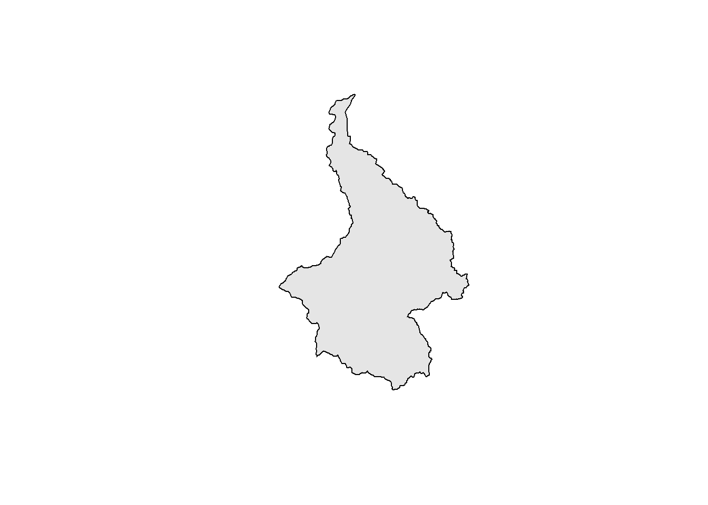
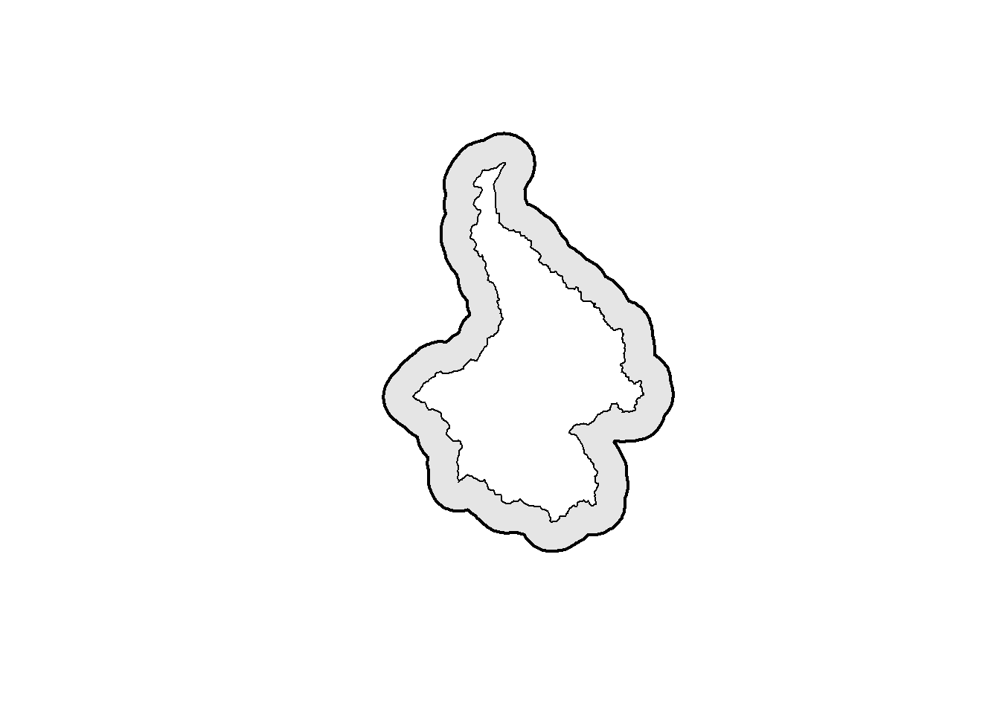
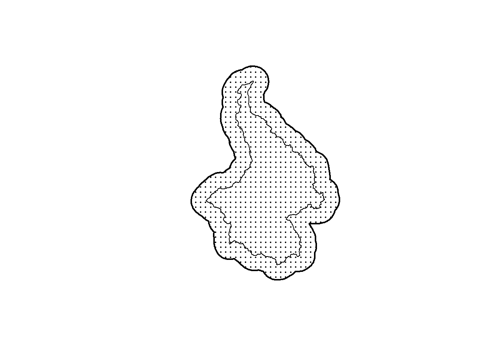
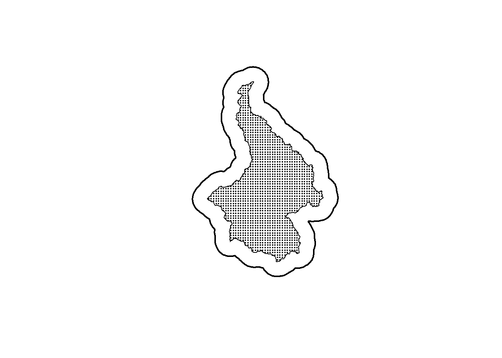
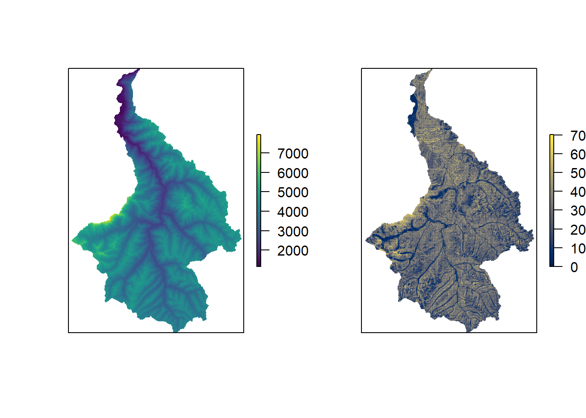
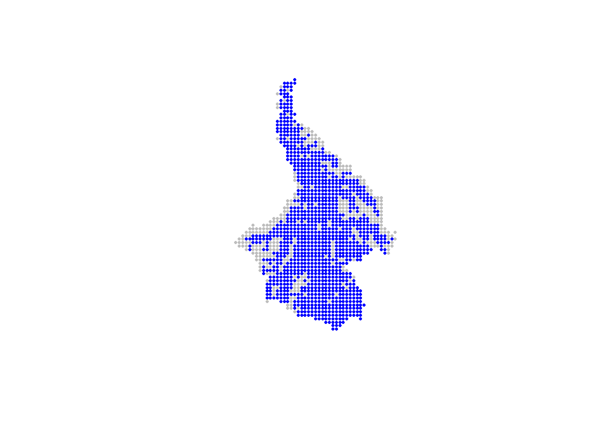
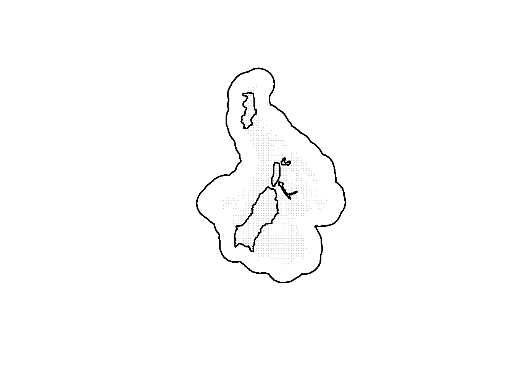
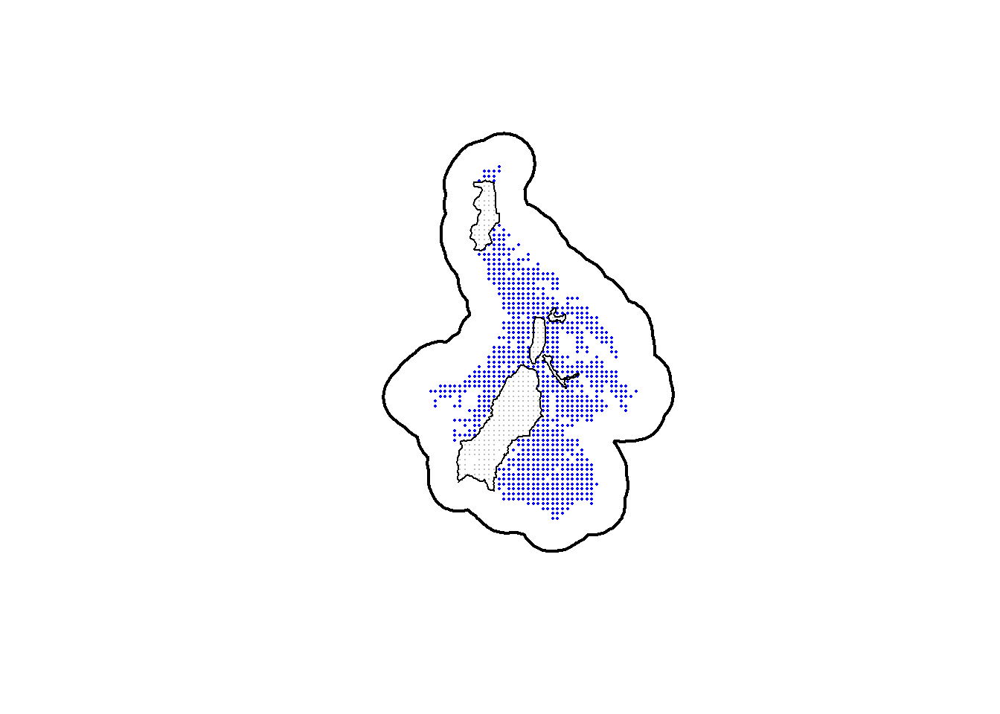
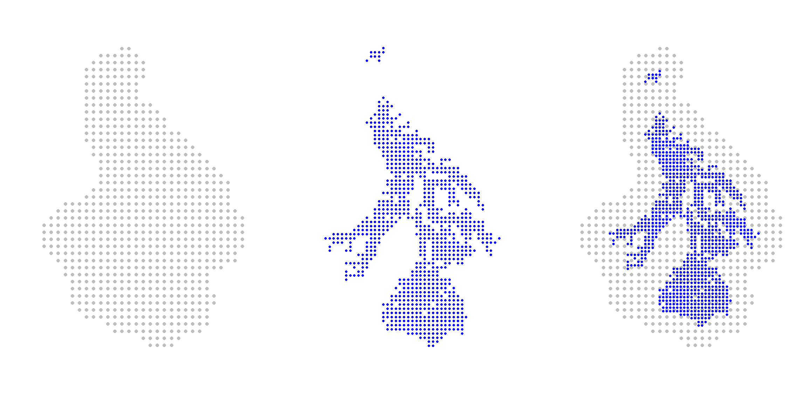

Vignette 3 Preparing design objects
Chris Sutherland & Gates Dupont
3.1 Background
This document provides an example of generating the input objects for the optimal design function, scrdesignGA(), which is available in the spatial capture-recapture R package, oSCR. From the package help file (?scrdesignGA()):
scrdesignGA()implements a genetic algorithm to solve this k-of-n design problem. In the context of SCR, and for a given objective function and landscape, the function finds the best subset of sampling locations (k) from all possible sampling locations (n).
We developed this framework with camera traps in mind, but this method can easily be applied to determine the general location of other non-invasive surveys, assuring that effort is standard across all sampling locations.
The functions requires the following input objects:
statespace: A discretized representation of the study area (state-space), defined as a convex hull around the trapping extent with an additional buffer of approximately \(3\times\sigma\) to ensure the incorporation of the activity centers of all individuals available for captured.alltraps: A two-column dataframe, labelledXandYaccordingly, comprised of all possible trapping locations. These locations should be user-defined after accounting for logistic constraints, primarily accessibility. Design generation then relies on subsetting from these locations.
The function also requires input values of beta0 and sigma which will come from literature, pilot studies, or best guesses, and the number of traps which will be defined by the user. We do not discuss these inputs any further except to say that in this example we use values of beta0 = 0.025, sigma =3.25, and ntraps = 50. Here the focus is on generating the statespace and alltraps objects.
Before getting started, a few packages should be loaded:
3.2 Creating statespace from a polygon
Consider the motivating example in Dupont et al. (in review, preprint on bioRxiv), where the interest is designing an SCR study in an area defined by a watershed that can be represented as a polygon (pak_poly):

This polygon represents the general area within which traps can be deployed. The help file suggests that the statespace should be “a convex hull around the trapping extent with an additional buffer of approximately \(3\times\sigma\)”. Creating the statespce object therefore requres first a buffering of the study area, then the creation of a regular grid of points withing that buffer.
3.2.1 Buffer the trappping area
The first step is to buffer pak_poly using a buffer width of \(3\times\sigma\). In this case, \(\sigma\) is 3.25, and three times that is 9.75. The projection of pak_poly is in UTM (i.e., meters), so we also need to make sure to convert \(\sigma\), which is in km, to m.
# Assign buffer distance
buff <- 3*sigma*1000 #change to m
# Create state-space from study area and buffer
ss_polygon <- st_buffer(pak_poly, dist = buff)
# Plot the state-space and study area
plot(st_geometry(ss_polygon), lwd = 2, col = "grey90")
plot(st_geometry(pak_poly), lwd = 1, col = "white", add = TRUE)
3.2.2 Generating a regular grid
The second step is to generate a regular grid of points within this area that represents the possible activity centers of all individuals that could be captured by any trap placed in pak_poly. This process is straightforward using the the spatial sampling function in the sf package (sf::st_sample()) and specifying type = "regular". It does require that we approximate the number of points (the size argument), which requires that we also define the resolution (spacing) of this grid. We use a resolution equal to \(\sigma\), and therefore, the number of points is the area divided by the area of a pixel with sides equal to sigma:
# Assign the resolution of the state-space
ssgrid_size <- as.numeric(round((st_area(ss_polygon)/1000^2) / sigma^2))
# Sample points within the state-space at that resolution
ss_points <- st_sample(x = ss_polygon, size = ssgrid_size, type = "regular")
# Plot the state-space as pixels, the study area polygon, and the state-space polygon
plot(st_geometry(ss_points), pch = 16, cex = 0.25)
plot(st_geometry(pak_poly), lwd = 1, add = TRUE)
plot(st_geometry(ss_polygon), lwd = 2, add = TRUE)
3.2.3 Extracting the coordinates
The statespace object should be a 2-column matrix or dataframe countaining the X and Y coordinates. These can be extrated directly from the spatial object ss_points using the coordinates() function. For convenience, here all coordinates are converted to the km scale (for UTM, divide by 1000).
3.3 Creating alltraps from a polygon
3.3.1 Create all technically possible points
Using the same principles and functions as the previous section, the first step for creating the alltraps object is to generate a regular grid of points within this area that represents all possible trapping locations. We use \(0.5\times\sigma\) here, but as long as the spacing is not larger than sigma the end result should not be effected\(^{\dagger}\). Again, this process is straightforward using the the spatial sampling function in the sf package (sf::st_sample()) and specifying type = "regular".
\(^\dagger\) this has not been formally evaluated, but should be easy to test.
# Determine possible trap spacing
traps_size <- round(as.numeric((st_area(pak_poly)/1000^2) / #m -> km
(0.5*sigma)^2))
# Generate traps using that spacing
alltraps <- st_sample(x = pak_poly, size = traps_size, type = "regular")
# Plot the state-space, study area, and possible trap locations
plot(st_geometry(ss_polygon), lwd = 2)
plot(st_geometry(pak_poly), lwd = 1, add = TRUE)
plot(st_geometry(alltraps), pch = 16, cex = 0.25, add = TRUE)
3.3.2 Create all practically possible points
Part of the motivation for developing this design generation framework was to accomodate sampling restrictions and logistical constraints in the design phase (as opposed to adjusting in situ). To demonstrate this in practice, sampling in these mountainous areas of the snow leopard range in Pakistan has two obvious challenges:
- areas too steep cannot be sampled (we use a slope cut-off of 45\(^\circ\))
- areas too high (in elevation) cannot be sampled (we use an elevation cut-off of 4500\(m\))
Luckily, elevation layers are available so we can use that (elev), and slope can be derived using the terrain() function from the raster package.
#the layer 'elev' has been loaded
# Generate the slope raster from the elevation raster
slop <- terrain(elev, opt = 'slope', unit = 'degrees', neighbors = 8)
# Plot the elevation and slope side-by-side
par(mfrow = c(1,2), new = FALSE)
plot(elev, axes = FALSE, col = viridis(100, option = "D"))
plot(slop, axes = FALSE, col = viridis(100, option = "E"))
Using the extract() function from the raster package, we can extract the elevation and slope values for each potential trap location. Then, using the cut-off values, we can identify and select only those points that are ‘sampleable’. As with the statespce object, the alltraps object should be 2-column matrix or dataframe countaining the X and Y coordinates of the sample points.
# Possible trap locations to 2-column object (dataframe or matrix)
allpoints <- st_coordinates(alltraps)
# Extract elevation and slope for the traps
allpoints_elev <- extract(elev, allpoints)
allpoints_slop <- extract(slop, allpoints)
# Subset possible trap locations according to logistic constraints
alltraps <- allpoints[allpoints_elev < 4500 &
allpoints_slop < 45 &
!is.na(allpoints_elev) &
!is.na(allpoints_slop) ,]/1000
# Plot all of the traps below the now subsetted (usable) traps (now called "alltraps")
plot(allpoints/1000, pch = 16, cex = 0.5, col = "grey",
asp = 1, axes =FALSE, xlab = "", ylab = "")
points(alltraps, pch = 16, cex = 0.5, col = "blue")
The removal of points can also be done using a polygon that delineated unsampleable areas (e.g., cities or areas that are impossible to access). In the following example, we remove potential trapping points using a polygon called nogo_areas that represent inaccessible parts of the landscape.
#the shapefile 'nogo_areas' has been loaded
plot(st_geometry(ss_polygon), lwd=2)
points(alltraps*1000, pch=16, cex=0.2, col="grey")
plot(st_geometry(nogo_areas), lwd=2, add=TRUE)
Its much easier to use spatial objects to identify and remove overlapping regions:
alltraps_df <- data.frame(X=alltraps[,"X"]*1000,
Y=alltraps[,"Y"]*1000)
alltraps_sp <- st_as_sf(alltraps_df,coords=c("X","Y"))
st_crs(alltraps_sp) <- st_crs(nogo_areas)
#subset the spatial object
alltraps_sp$nogo <- lengths(st_within(alltraps_sp, nogo_areas))
cliptraps_sp <- alltraps_sp[alltraps_sp$nogo == 0,]
plot(st_geometry(ss_polygon), lwd=2)
plot(alltraps_sp, pch=16, cex=0.1, col="grey", add=TRUE)
plot(cliptraps_sp, pch=16, cex=0.3, col="blue", add=TRUE)
plot(st_geometry(nogo_areas), lwd=1, add=TRUE)
3.4 Inspecting the objects
With both objects created (statespace and alltraps), it is worth plotiing the objects to confirm that they all line up in space.
# Plot the generated objects
par(mfrow = c(1,3))
plot(statespace, pch = 16, cex = 1, col = "grey", asp = 1, axes = FALSE, xlab = "", ylab = "")
plot(alltraps, pch = 16, cex = 0.75, col = "blue", asp = 1, axes = FALSE, xlab = "", ylab = "")
plot(statespace, pch = 16, cex = 1, col = "grey", asp = 1, axes = FALSE, xlab = "", ylab = "")
points(alltraps, pch = 16, cex = 0.7, col = "blue")
Great! Both objects are created and spatially aligned, and the units appear to be on the km scale. These are the landscape (statespace) and trap (alltraps) inputs for scrdesignGA().
As previously mentioned: if you have any issues or questions, we have a very responsive, and friendly user group.